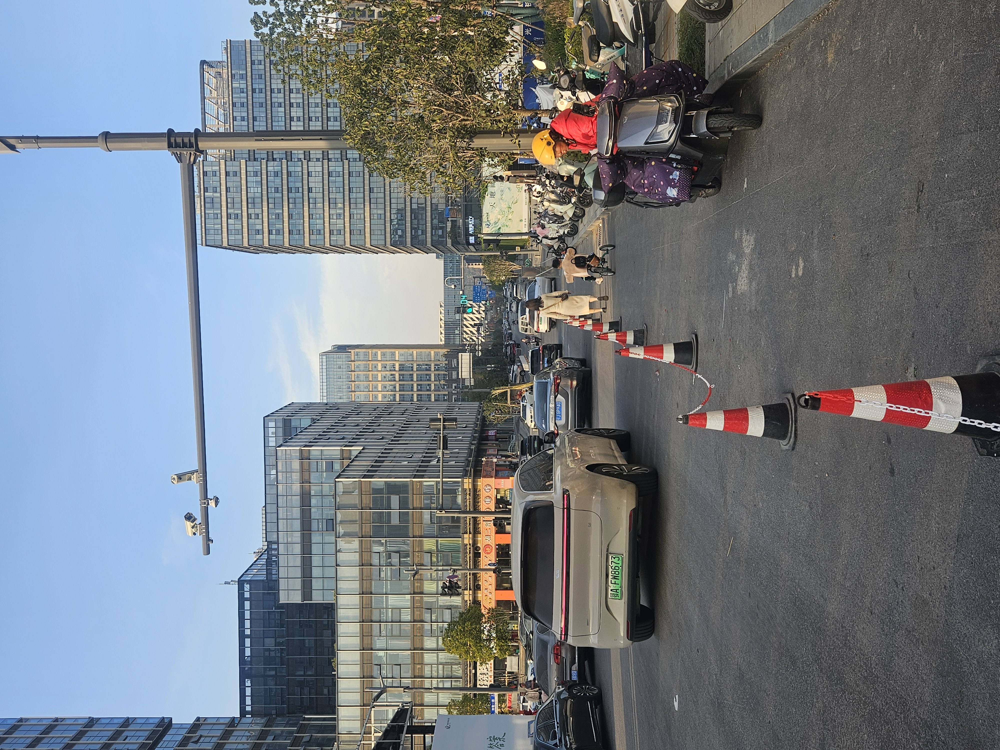
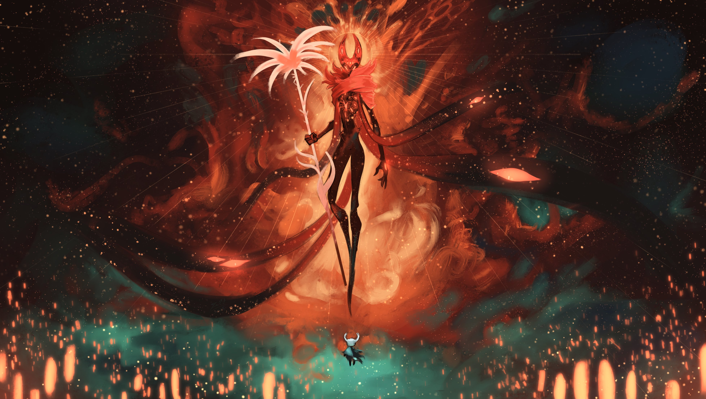

从 0 开始制作一个 STM32 DAPLink
从一个“能不能自己做调试器”的念头开始，记录 USB、HID、CMSIS-DAP 和 OpenOCD 一路踩坑的过程。
Radio station
CQ CQ CQ
电台呼号是很个人的身份标识。它和博客、代码仓库、硬件项目一样，都是“我真实做过什么”的一部分。以后这里可以继续扩展 QSL、通联记录、设备记录和学习笔记。
Latest logs


Fragments




Friends
https://smallcoral.github.io/
Contact